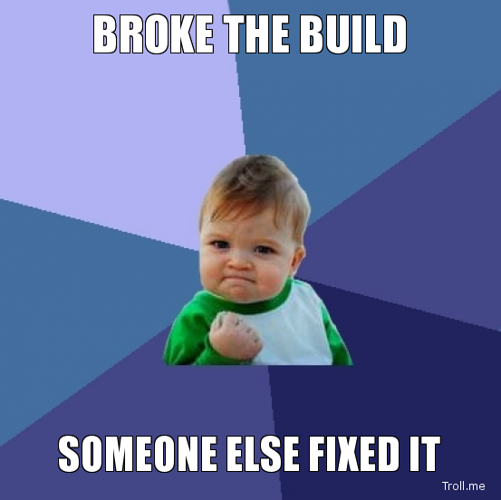

Building LARGE apps with Angular.js
TESTABILITY
WHAT?
WHY?
HOW?
- what state is the program in?
- how did it get there?
- where can it go from here?
- where can it go from here?
- where can it go from here?
un-testable code

Avoidance isn't a solution
programmers
define high-level abstractions
function Role(startDate) {
this.startDate = startDate;
}
function Manager() {}
Manager.prototype.manage = new function() {
console.log("Get back to work!");
};
Manager.prototype = new Role();
function Developer() {
this.linesOfCode = 0;
}
Developer.prototype.work = new function() {
this.linesOfCode++;
};
Developer.prototype = new Role();